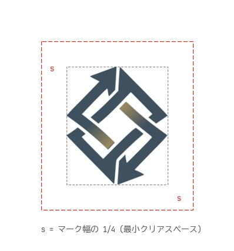
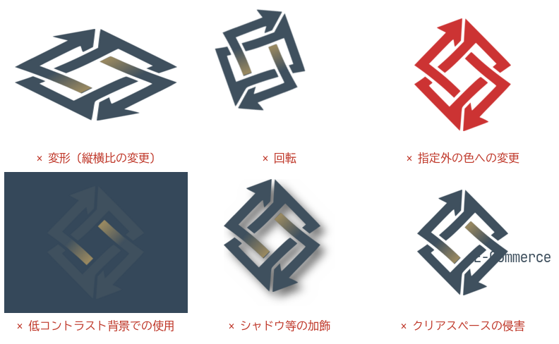

1.ロゴの構成
ロゴは シンボルマーク (2 本の矢印が組み合った菱形のモノグラム。循環・連携を象徴)、ロゴタイプ (「Skírnir Inc.」、í のアクセント記号はゴールド)、タグライン (「E-Commerce Specialist」) で構成されます。
使用形態は 2 種類です。
- フルロックアップ (マーク + ロゴタイプ + タグライン): 十分な表示面積がある場合の基本形
- マーク単体: アイコン・favicon・SNS アバター等の省スペース用途
2.バリエーションとロゴデータ
すべて public/images/ に配置しています。原則として支給データをそのまま使用し、再作図・再着色は行わないでください。
skirnir-logo_only.svgskirnir-logo_only_dark.svgskirnir-logo_only_grayscale.svgskirnir-logo_only_grayscale_dark.svgskirnir-logo_only_black.svgskirnir-logo_only_white.svg| ファイル | 形態 | 用途 |
|---|---|---|
skirnir-logo.svg | フルロックアップ | 白・明色背景 |
skirnir-logo_only.svg | マーク単体 (基準) | 白・明色背景 |
skirnir-logo_only_dark.svg | マーク単体 | 黒・暗色背景 |
skirnir-logo_only_grayscale.svg | マーク単体 | モノクロ媒体・白背景 |
skirnir-logo_only_grayscale_dark.svg | マーク単体 | モノクロ媒体・黒背景 |
skirnir-logo_only_black.svg | マーク単体 (黒 1 色) | 2 値印刷・FAX・刻印・型抜き |
skirnir-logo_only_white.svg | マーク単体 (白 1 色) | 2 値・暗色地への刻印・型抜き |
favicon.ico | マーク単体 (16/24/32/64px) | ブラウザ favicon |
3.カラー規定
- ブランドネイビー
- HEX #3F505E
RGB 63, 80, 94
CMYK 33, 15, 0, 63 *
- ブランドゴールド
- HEX #988860
RGB 152, 136, 96
CMYK 0, 11, 37, 40 *
- アクセントゴールド
- HEX #A6946B
RGB 166, 148, 107
CMYK 0, 11, 36, 35 *
- 背景クリーム (任意)
- HEX #F4F4EE
RGB 244, 244, 238
CMYK 0, 0, 2, 4 *
- ブランドグラデーション
- #988860 → #3F505E
マーク中央の 2 本のバー。方向・位置の変更不可
* CMYK 値は RGB からの単純変換による参考値です (未検証)。印刷時は必ず色校正で確認してください。
4.背景と使い分け
| 背景 | 使用するデータ |
|---|---|
| 白 〜 明るい背景 (推奨: 白または #F4F4EE) | 基準版 |
| 黒 〜 暗い背景 | _dark 版 |
| モノクロ媒体 (グレースケール印刷等) | _grayscale / _grayscale_dark 版 |
| 2 値表現 (FAX・刻印・型抜き・単色印刷) | _black / _white 版 |
背景の明度が中間 (ネイビーに近い明度) の場合はロゴが埋没するため使用しないでください。写真の上に置く場合は、ロゴ周辺が十分に明るい (または暗い) 均質な領域を選んでください。
5.クリアスペース
ロゴの周囲には マーク幅の 1/4 (= s) 以上の余白を確保してください。クリアスペース内に文字・図形・他のロゴを配置してはいけません。フルロックアップの場合も、ロゴ全体の外接矩形から同じ余白を確保します。

6.最小使用サイズ
| 形態 | デジタル | 印刷 (参考値) |
|---|---|---|
| フルロックアップ | 幅 160px 以上 | 幅 30mm 以上 |
| マーク単体 | 高さ 24px 以上 | 高さ 8mm 以上 |
タグラインが判読できないサイズではフルロックアップを使わず、マーク単体に切り替えてください。24px 未満のサイズが必要な場合 (favicon 等) は、小サイズ向けに調整済みの favicon.ico を使用してください。ベクターデータの単純縮小では切れ込みが潰れます。
7.禁止事項

- 変形: 縦横比の変更、斜体化、パースをつける
- 回転: 角度を変えて使用する
- 色変更: 規定色以外への変更、グラデーションの削除・方向変更 (単色化には
_black/_white版を使用) - 低コントラスト背景での使用: ネイビーに近い明度の背景に基準版を置く
- 加飾: ドロップシャドウ、縁取り、光彩、透過などのエフェクト追加
- クリアスペースの侵害: 規定の余白内への文字・図形の配置
このほか、マークとロゴタイプの位置関係の変更、要素の分解・再構成、パターンとしての敷き詰め使用も禁止します。